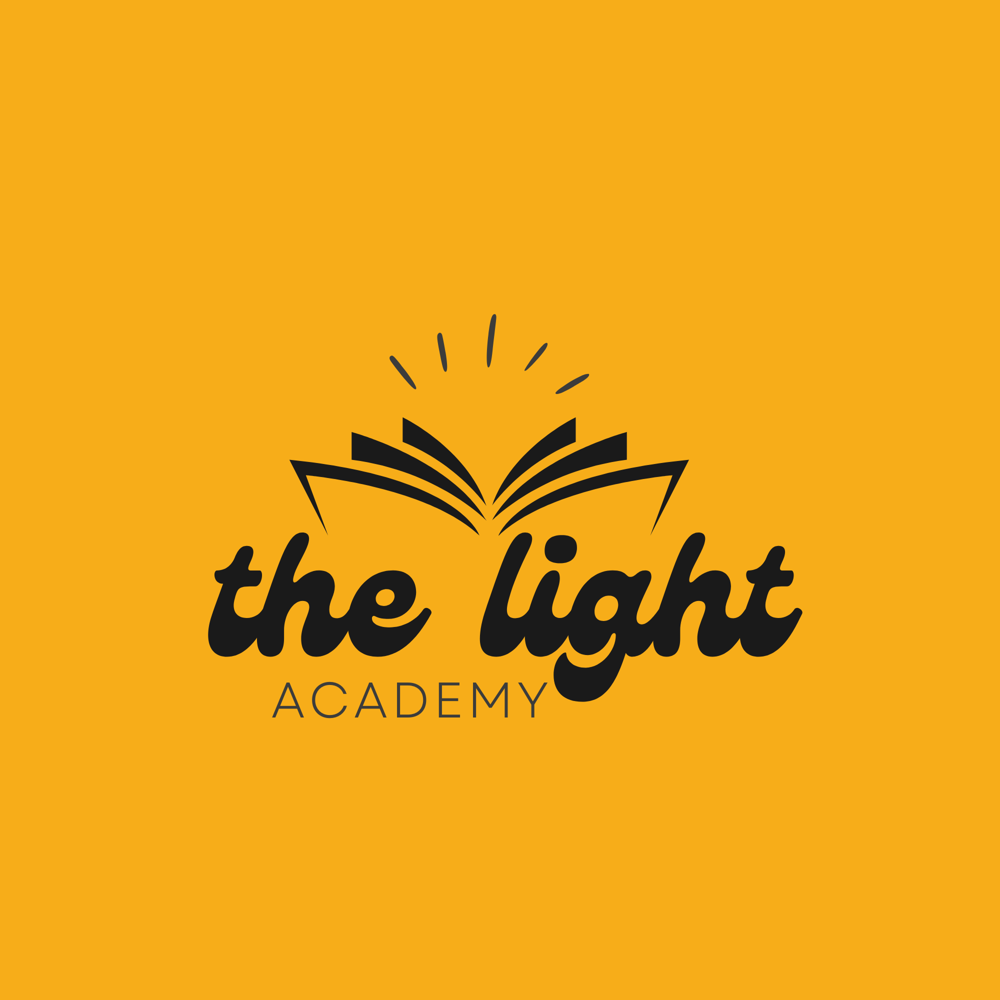

LightSpace
Домашно · английски · 4. клас
Домашно
Изход
Домашно · английски · 4. клас
Monster Family Album
to be
— am · is · are
Семейството чудовища се представя. За да им помогнеш, трябва ти само един глагол —
to be
. Десет упражнения: щракаш, пишеш, свързваш и подреждаш.
0 / 0 отговорени
Към моя профил
0
/
0
верни
Отначало
Провери